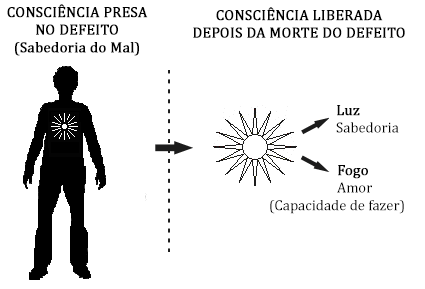

Conferência nº 15
EGO, PERSONALIDADE E ESSÊNCIA
Esta conferência tem como objetivo ensinar-nos a diferenciar a atitude de cada um destes para aprender a observar e distinguir cada um de nossos atos. Quando se está manifestando o ego, quando a consciência e quando a personalidade.
Existem três tipos de atos:
- Atos do Ego ou recorrência (por não estar em vigília). Voltam a ocorrer com suas consequências.
- Acidentes (por estar dormidos). Provocm novas recorrências.
- Atos Conscientes (para o qual devemos estar despertos).
O QUE É O EGO?
Distintos nomes que recebe o Ego:
- Eus
- Agregados psicológicos
- Defeitos
- Erros
- Desejos
- Tentações
- Instintos
- Formas de ser do mim mesmo
- Pecados
- Demônios vermelhos de Seth
- Diabos
- Trevas interiores
- Injustiça
- Ignorância
- Sofrimento
- Dor
- Recordações
- Consciência presa
- Equivocação
- Memória mecânica
- Conceitos
Algumas coisas do Eu psicológico:
Os eus psicológicos nascem das impressões não transformadas em qualquer de nossas existências. Vão-se robustecendo com o transcorrer dos séculos, se manifestam por falta de auto-observação ou vigília. O eu psicológico tem uma natureza molecular. Pertence pois, a quinta dimensão, porém se pode apossar de nossa personalidade e através dela, de nosso corpo físico. Cada eu tem sua própria personalidade.
Os eus novos ou recém-criados:
Nestas últimas existências temos criado muitíssimos eus que antes não tínhamos. Exemplo: eu do telefone, do celular, telespectador, motorista, leitor, cineasta, cidadão, pornografia, DVD, etc.
Há eus psicológicos muito velhos:
Por exemplo: o Eu da Preguiça, que é o pai de todos. Vejamos alguns detalhes de Preguiça: eu ocioso, eu festeiro, eu me divirto, eu estou entediado, eu me degenero, eu desobediente, eu tenho antipatia, etc.
O eu evolui:
Existem os eus luxuriosos. É uma família muito extensa, vejamos alguns: eu fornico, eu adúltero, eu vou ao prostíbulo, eu conquisto, eu me masturbo, eu do sexo anal, eu homossexual passivo, homossexual ativo, eu auto homossexual, eu bestialismo, eu lésbica, eu do incesto, eu celibatário, eu pratico sexo oral, eu mineteiro, etc. Estes eus aumentam seu peso molecular em cada existência e fazem que sua força de manifestação se tornem maior, se não se trabalha sobre eles.
Todos os eus podem ser eliminados:
Para eliminar um eu psicológico é necessário estar em vigília para poder descobri-lo, logo observar o que é que faz, por que o faz, quando o faz, etc., logo compreendê-lo e finalmente matá-lo pedindo a Mãe Divina que o elimine. A este procedimento se chama morte psicológica. SE NÃO trabalhamos sobre si mesmos os Eus morrerão na Involução. O eu psicológico se apossa do corpo físico e faz que façamos o que ele gosta. O eu nos faz cometer muitos erros, esgota nossas energias e impede qualquer avanço ao nosso Ser.
O eu origina Recorrência:
Cada eu traz consigo as contas por pagar e receber, e se não trabalhamos para compreendê-lo seguiremos repetindo a lição, até que apreendamos tudo o que há que apreender.
O eu é desejo:
Todos nossos eus se alimentam como desejos: desejo beber, desejo dançar, desejo copular, desejo comer, desejo falar, desejo me divertir, etc., etc., etc.
O QUE É A PERSONALIDADE?
A personalidade é um veículo energético. Forma-se nos primeiros sete anos de vida e se robustece no resto da existência. Nasce no tempo, morre no tempo. Não existe futuro para a personalidade. Se forma em cada existência para que os eus se manifestem no corpo físico.
Com cada corpo físico se forma sua própria personalidade.
A personalidade está formada por muitas frações, cada eu tem a sua.
A personalidade se forma com a imitação.
A personalidade nos fascina com o mundo.
A personalidade nos tem hipnotizado.
Alguns elementos formadores da Personalidade:
– Nome – sobrenome – sexo – idade – educação – posição econômica – lugar – idioma – conceitos – hábitos – modas – costumes – normas – temores – leis do país – ofício – profissão – títulos, etc.
Tipos de personalidade: Existem dois tipos de personalidades:
- A personalidade passiva, ao serviço do Ser. É receptiva.
- A personalidade ativa, ao serviço do eu. Nos mantém identificados.
O QUE É A ESSÊNCIA?
A Essência é o Verdadeiro, o Real, o Imortal de cada um de nós, é o único que verdadeiramente vale a pena. Os cem por cento de nossa Essência é imortal, porém se encontra dividida em duas partes; uma que é livre e autoconsciente, com 3% de Consciência livre e desperta e os 97% restante de Essência é inocente e engarrafável, com o propósito de que nós a liberemos e façamos nossa própria criação, para poder tirar a sabedoria do mal. O 3% de Essência se manifesta nos primeiros anos da existência, porém chegados aos sete anos, quando possuímos o uso da razão, se termina de dormir e somente em alguns poucos casos se voltará a escutar a voz da Consciência.
Vejamos um exemplo de ação: uma garota vai ao cinema com seu namorado, sua mãe lhe diz que tenha cuidado, que não vá “meter a pata”. Regressa a jovem à casa e lhe diz a sua mãe que tinha razão, que o namorado lhe propôs sexo, porem ela atuou “conscientemente”. Que quando lhe propôs, lhe disse “conscientemente” que não.
Porém vejamos realmente o que passou:
O Eu da Luxúria lhe disse que aceitara.
A personalidade é distinta, pensa que pode ficar grávida, que isso lhe arruinaria a vida, que não tem garantias, etc., etc.; foi a personalidade que rechaçou a proposta e não a Consciência como ela supõe.
A Consciência não interveio em nenhum momento. A Consciência lhe teria dito:
“este não é meu cônjuge, este é um estranho que somente quer divertir-se. A mulher deste é fulana, etc., etc.”.
Se refletimos em qualquer de nossos atos, nos daremos conta de quais são os atores, o que sobrou e o que faltou. Este tema preside a observação de si mesmo, por isso devemos tornar-nos reflexivos e saber diferenciar em cada ato o ator.